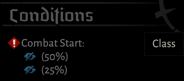
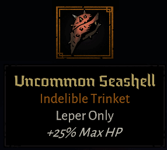

"The blackest night yields to brightest dawn."
"가장 어두운 밤 뒤엔 가장 눈부신 동이 트는 법."

왕실 보좌관들의 만류에도 불구하고
직접 나병환자촌에 방문해서 환자들에게 희망을 심어주던 왕
그에게 있어 짓무른 병자들보다 혐오스럽게 느껴지는건 뒤에서 비웃고 욕하는 측근들이었다.
그러나 결국 왕은 나병에 전염되어 숨기기 힘들정도로 증상이 심해졌고
나날이 심해지고 있는 고통에서, 먼 지역의 의사들과 전문가들을 불러들였지만
하나같이 내려진 결론은 왕이 죽어간다는 것.
이 소식은 마치 전염병처럼 퍼져나갔고
오랫 동안 권력을 유지해서 제대로 부패했던 왕실 고문단은
그 새 반역 음모를 꾸미게 된다.
왕은 병상에 누워서도 이미 고문단의 계략을 눈치채어
직접 대장장이를 불러들여 검과 갑옷을 만들 것을 명했고
그 검을 높게 치켜들어 올렸다.
왕은 다가오는 위협에 맞서 싸우기 위해 일어섰다.
고문단의 병사들을 상대하고나서
검날과 함께 반역의 음모는 부러지게 되었고
그동안 보인 동정심과 자비로움을 접고 오직 분노로 숙청을 시작해
부패한 고문단을 완전히 도려내었다.
이 후, 왕은 자신의 자비로운 정신만은 이 나라에 오랫동안 남아 백성들을 보살펴줄거라 생각하고
왕좌에서 물러나게 된다.
백성들은 창가와 길가에 모여 떠나는 왕을 맞이하며 눈물을 흘리거나
걸어갈 길 위에 꽃잎을 뿌렸다. 경건하게 지켜보는 사람도 있었다.
성문을 나오자 성 밖의 아름다운 경치에 감탄하고
자신에게 내려진 축복에 감사함을 느끼게 된다.
|  | 클래스 특징으로 전투 시작부터 실명 토큰을 가질 확률을 가짐 각각 독립확률이기 때문에 실명 2개는 12.5%, 실명이 안걸릴 확률은 37.5%, 하나만 걸릴 확률은 나머지인 50%. 기본적인 체력, 순수 데미지 기대값은 1등인 대신 공격기술 후에 실명을 가질 확률이 있음 콤보 시 실명 토큰을 무시할 수 있음 (없애주지 않음을 명심) |
| 추가 예정 | |
 | 추가 예정 |
| 추가 예정 | |
| 추가 예정 | |
| 추가 예정 | |
| 추가 예정 | |
| 추가 예정 | |
| 추가 예정 | |
| 추가 예정 | |
| 추가 예정 | |
 | 추가 예정 |
| 16렙에 상위호환 공용장신구가 열림 동일 등급인데 이게 나왔다는건 그냥 운을 탓하시길 아니 전용 장신구인데 대놓고 안좋게 나오는 이유는 뭡니까? | |
| 나병을 위한 미스 시 토큰 획득 분명 나쁘지 않지만, 다른 경쟁력있는 장신구에 비해 아쉬운 성능 | |
|  | 추가 예정 |